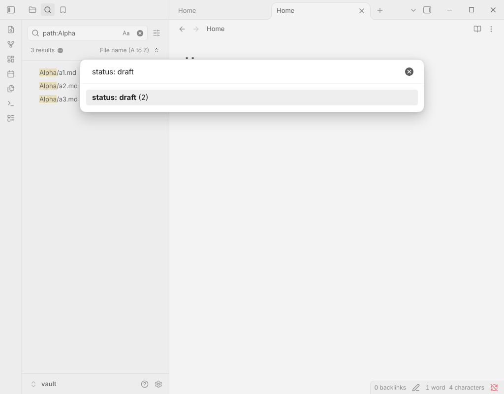

Free Obsidian plugin
Random Note Filters
Open or link a random note from a folder, tag, property or the current search results.
Install from the Obsidian directory Open in Obsidian Source code and issues

What it does
Open or link a random note from a folder, tag, property or the current search results.
The core Random note command draws from the whole vault. This plugin lets you narrow the draw, avoids repeating the notes it picked lately, and keeps private or template notes out of it. It works offline and on mobile.
Highlights
- Open a random note: any note in the vault.
- Open a random note in the current folder: includes its subfolders (for a note in the vault root, the whole vault).
- Open a random note sharing a tag with this one: picks one of the current note's tags, nested tags included.
- Open a random note from the search results: run a search in the core Search pane first, then draw from what it lists.
- Open a random note that nothing links to: rediscover orphans.
- Open a random note with a tag..., in a folder... or with a property value...: a searchable list with the number of notes in each.
- Open another random note with the same filter: roll again without choosing again.
Details
- Version
- 0.1.0
- Needs Obsidian
- 0.16.0 or newer
- Platforms
- Desktop and mobile
- Author
- Siulved54
- Price
- Free and open source